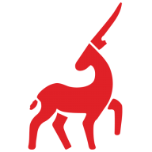
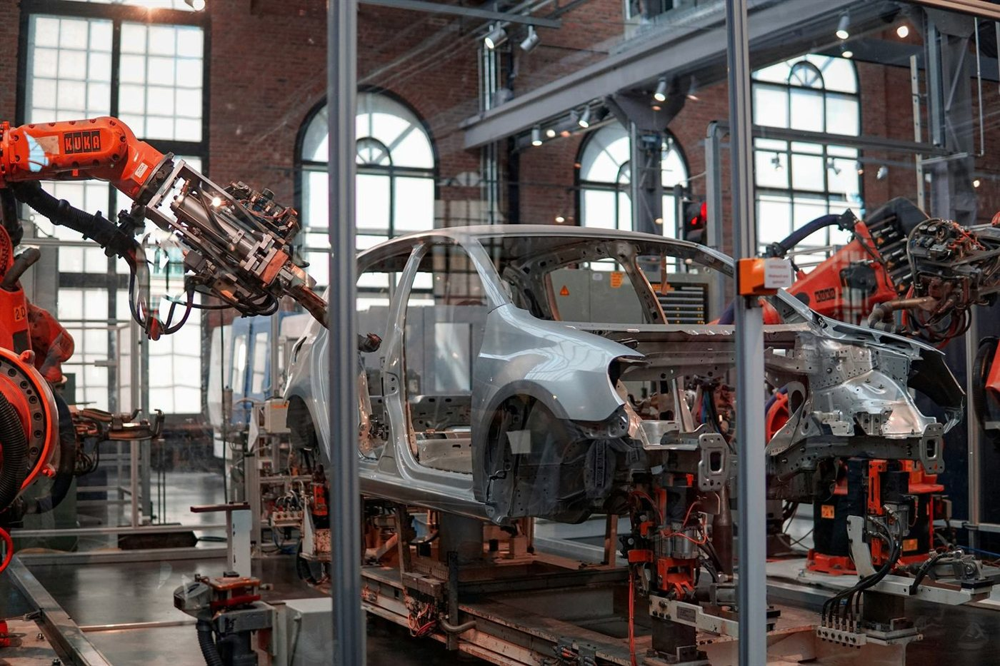
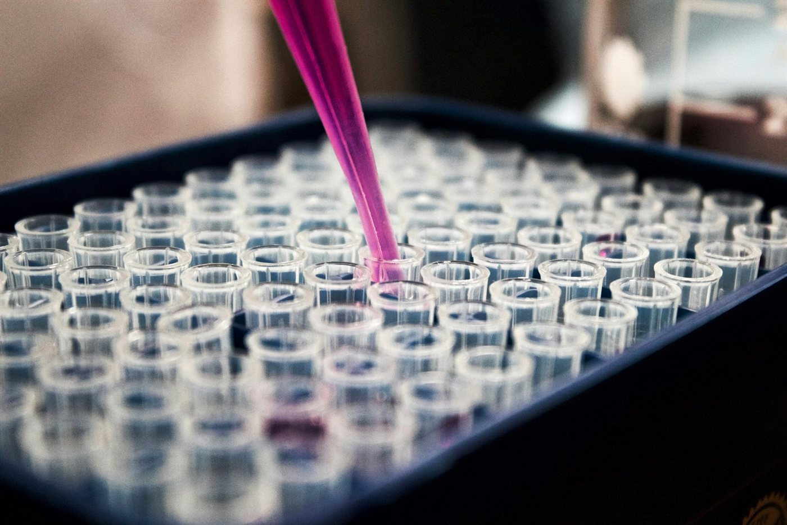
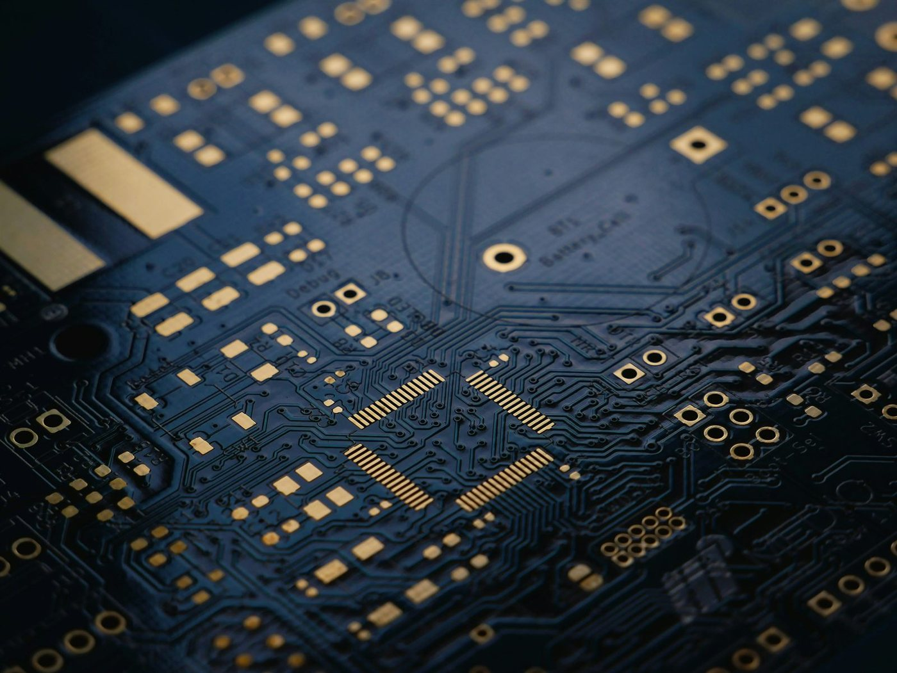
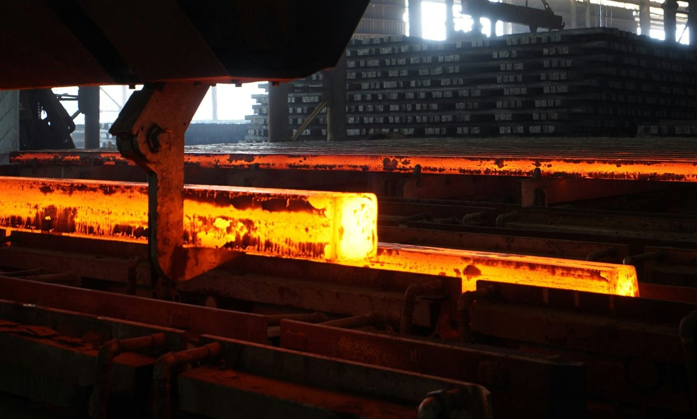
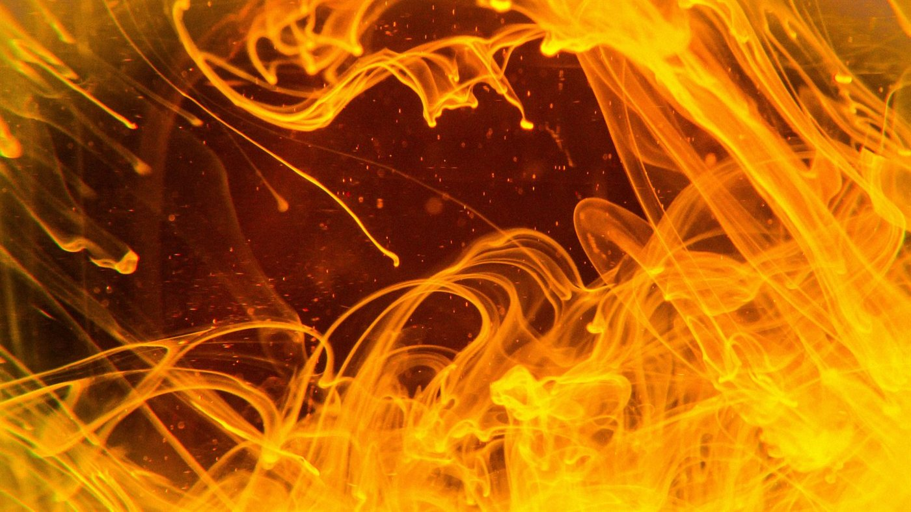
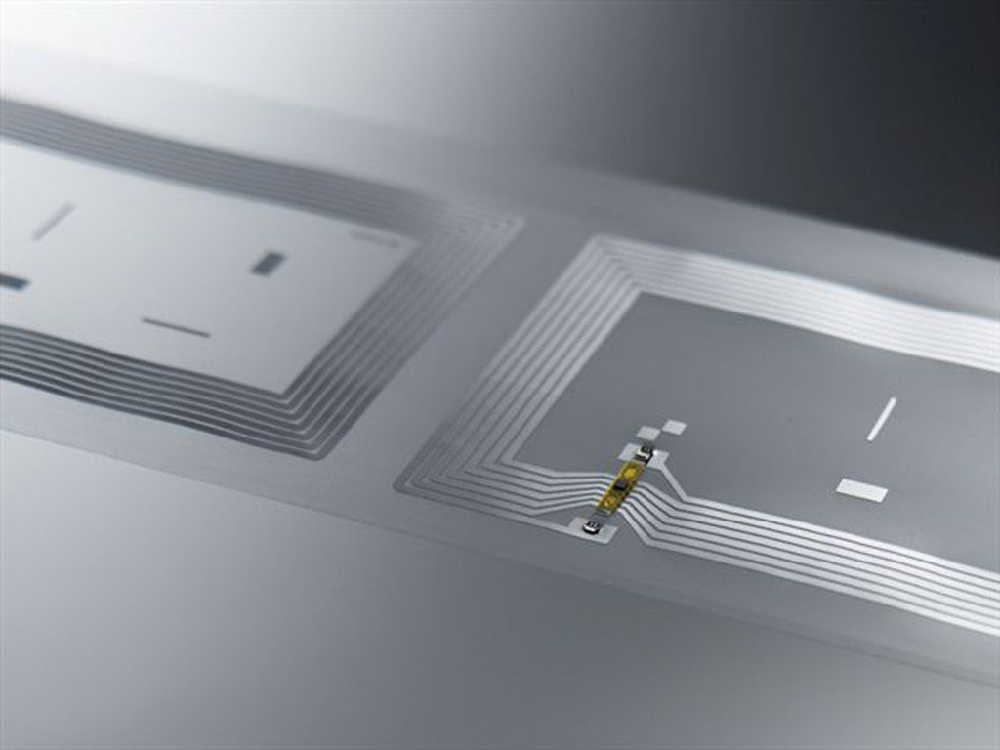
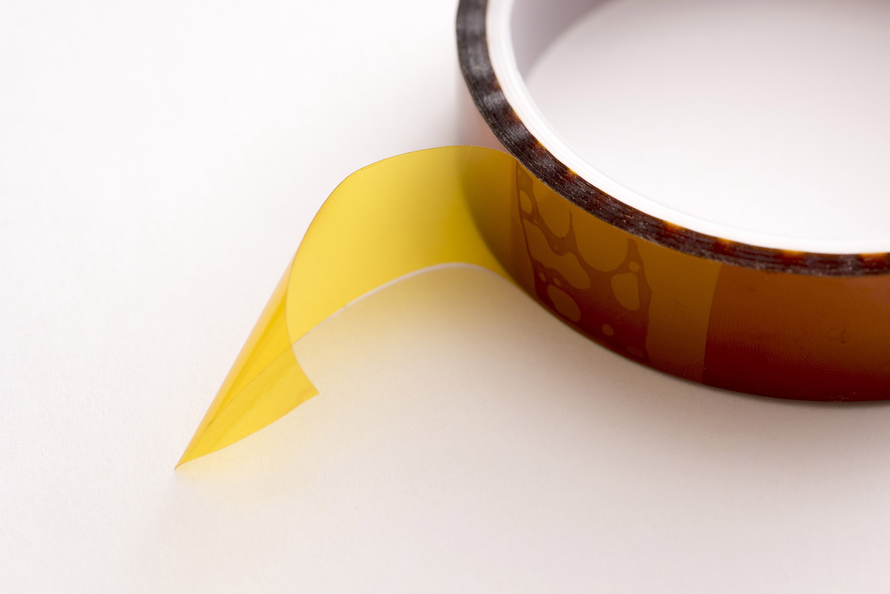
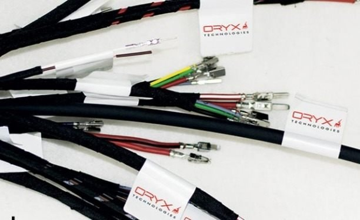
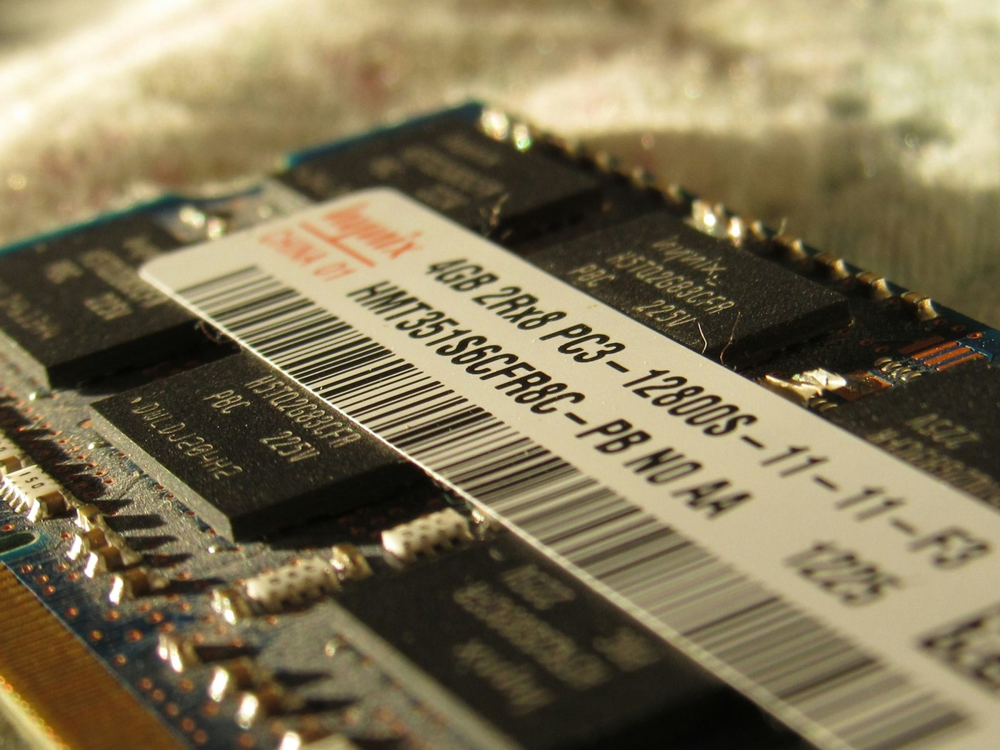

Chemikalienbeständige Etiketten von ORYX TechnologiesUnsere chemikalienbeständigen Etiketten halten Säuren, Lösungsmitteln, Alkoholen und Industriereinigern stand. Der Barcode bleibt lesbar und die Haftung stabil, auch nach wiederholtem Kontakt.
Wir testen unsere Etiketten gegen die Medien, mit denen Sie tatsächlich arbeiten, und wählen das richtige Material und den richtigen Klebstoff für Ihren Einsatz aus.
Methylethylketon (MEK) und Xylol gehören zu den aggressivsten Lösungsmitteln in der Industrie. Unsere Polyesteretiketten widerstehen diesen Medien ohne Ablösen, Quellen oder Verblassen.
Salzsäure (HCl) und Schwefelsäure (H₂SO₄) in industriellen Konzentrationen. Spezielle Materialkombinationen bleiben dimensionsstabil und lesbar, auch nach längerem Kontakt.
Isopropanol (IPA) und Aceton werden regelmäßig zur Oberflächenreinigung eingesetzt. Unsere Etiketten bleiben haftend und lesbar, auch nach wiederholter Wischdesinfektion.
Maschinenreiniger, NaOH-Lösungen und andere alkalische Medien. Regelmäßige Reinigungszyklen hinterlassen keinerlei Spuren, weder am Etikett noch am Barcode.
Barcodes und QR-Codes behalten auch nach Chemikalienkontakt ihre maschinelle Lesbarkeit, für lückenlose Rückverfolgbarkeit in Prozessen mit aggressiven Medien.
Polyester (PET), Polyimid und verstärkte Verbundmaterialien: Je nach Chemikalie, Temperatur und Oberfläche wird das optimale Substrat und der richtige Klebstoff ausgewählt.
Chemikalienbeständigkeit ist keine pauschale Eigenschaft. Sie hängt von der konkreten Chemikalie, der Konzentration, der Einwirkdauer und der Temperatur ab. Wir testen für Ihre Bedingungen.
Beschreiben Sie Ihre Anforderungen im Formular.
Wir melden uns werktags innerhalb von 24 Stunden telefonisch bei Ihnen zurück.
Wir erarbeiten gemeinsam die passende Lösung für Ihre Anforderungen.
Wir liefern chemikalienbeständige Etiketten für Branchen, in denen aggressive Medien zum Alltag gehören.
Beständig gegen Lösungsmittel und Reinigungsmedien, mit dauerhaft lesbaren Codes für die Rückverfolgbarkeit.

Beständig gegen Lösungsmittel, Alkalien und Industriereiniger in Fertigung und Reinigungsprozessen.

Beständig gegen Isopropanol, Aceton und wiederholte Wischdesinfektion. FDA-, GMP- und REACH-Anforderungen auf Anfrage.

Haftend und lesbar nach Kontakt mit Reinigungsmedien wie Isopropanol und Aceton.

Beständig gegen Maschinenreiniger, Säuren und Lösungsmittel im industriellen Alltag.
Kundenspezifische Komplettlösungen, integriert in Ihre bestehende Infrastruktur und Prozesse. Mit jahrzehntelanger Erfahrung in Automotive, Chemie, Pharma und Logistik.
Dauerhaft lesbar und haftend bei Säuren, Lösungsmitteln und Reinigern, auch nach wiederholtem Kontakt.
Individuelle Lösungen, auch für anspruchsvolle Branchen. Entwicklung und Produktion aus eigener Hand.
Wir begleiten Projekte von der Idee bis zur Integration, mit persönlicher Betreuung und kurzen Wegen.
Unsere Systeme fügen sich in bestehende Infrastrukturen ein, herstellerunabhängig bei Druckern und Verbrauchsmaterial. Technisch stark, optisch zurückhaltend.
Ob extreme Hitze, chemische Beanspruchung oder automatisierte Rückverfolgung: Wir entwickeln Etiketten und Folien, die unter Bedingungen funktionieren, an denen Standardlösungen scheitern.

Beständig gegen Temperaturen bis +2100 °C, für Stahl- und Aluminiumfertigung, Leiterplattenproduktion und Härteprozesse. Barcodes bleiben lesbar, die Haftung bleibt stabil.
Mehr erfahren
Labels, flexible Tags, Patch-Tags und Hard-Tags, erarbeitet, integriert und geliefert aus einer Hand. Komplettlösungen, die sich in bestehende Infrastrukturen einfügen.
Mehr erfahrenBeständig gegen Lösungsmittel, Säuren, Alkohole und Industriereiniger. Dauerhaft lesbar, auch nach wiederholtem Kontakt mit aggressiven Medien in Pharma, Labor und Automotive.
Mehr erfahren
Polyimid- / Kapton-Folien für elektrische Isolierung, Trägersubstrate und Wärmeschutzkomponenten. Kein Schmelzpunkt, hervorragende Dimensionsstabilität unter Last und Wärme.
Mehr erfahren
Kennzeichnungsetiketten für Kabel und Leitungen bis zu einem Durchmesser von 1,4 mm, auf Anfrage auch bis 0,8 mm möglich.
Jetzt anfragen
Bedruckte Etiketten ab 4 × 4 mm, ideal für kleinste Bauteile und beengte Flächen. Bedruckte Musteretiketten sind innerhalb von 72 Stunden versandfertig, weitere spezielle Druckservices auf Anfrage.
Mehr erfahren